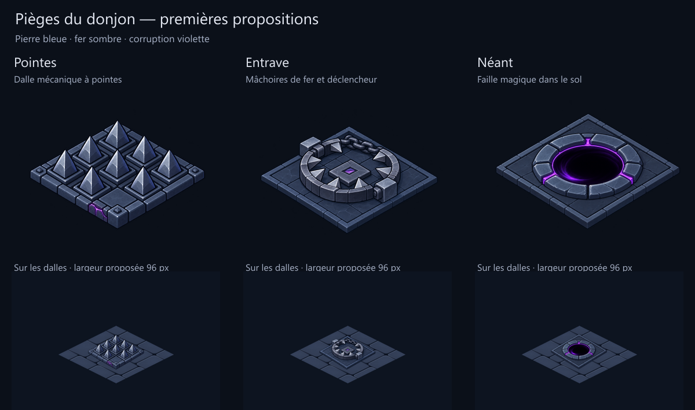

Trois pièges pour le donjon
Pointes mécaniques, Entrave à mâchoires et Néant au sol. Une même famille de pierre bleue, fer sombre et corruption violette. Les vues du bas montrent une largeur proposée de 96 pixels sur les véritables dalles.

Propositions de style issues d’ImageGen, pas encore intégrées à Godot. Les gabarits utilisent la caméra 2:1 du kit ; les peintures générées ne sont pas une reproduction exacte de leur géométrie. Le calage final, les volumes de support, les raccords au sol et les états armé/déclenché/épuisé restent à préparer. Aucun changement des règles ou des charges.
Brief et premiers prompts ImageGen · Prompts de reprise sur gabarits · Préparation et limites